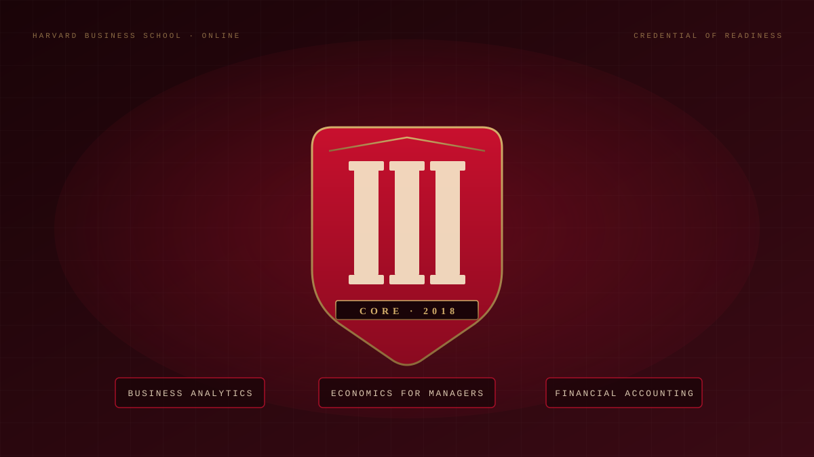

How Difficult is Harvard's HBX CORe Program?
An honest review from someone who finished the program. What it actually costs in time, what to expect from each course, and how to set yourself up to pass.

01 · TL;DR
It's open to almost anyone, and harder than people expect.
I came into HBX CORe with a mix of technology and business experience: a bachelor's from East Carolina University in Industrial Technology focused on Information Security and Management, plus two years of formal Program Management at Red Hat in the security org.
Even with that background, I found the program challenging. The acceptance rate is high (I've heard as high as 95%), but acceptance and completion are two very different things. The classes are designed to make you think, not to memorize, and the exams are tuned to expose that difference.
02 · The Three Courses
CORe is three modules, taught in parallel.
CORe stands for Credential of Readiness. It's the foundational HBS Online program built around three interlocking courses, taught at the same time across roughly 10 to 17 weeks (you pick the pace).
COURSE 01
Business Analytics
Statistics, regression, sampling, and how to make decisions from data. Heavy on Excel.
COURSE 02
Economics for Managers
Demand, supply, pricing power, willingness to pay, and how markets actually behave.
COURSE 03
Financial Accounting
Reading and building financial statements: balance sheet, income statement, cash flow.
03 · The Platform
Polished, interactive, and a real upgrade over Blackboard.
The interactive web interface is a refreshing departure from the standard Blackboard experience that most universities still rely on. I don't dislike Blackboard. I just find that the uniqueness of universities and individual classes can get lost in it. Harvard either built or contracted a genuinely well-designed platform.
That said, it isn't immune to operational pain. During spring 2018, an 8-hour maintenance window pushed an update that caused a noticeable performance regression, and they had to either roll back or patch within the next couple of days.
Most of the work happens through pre-recorded videos from three instructors plus on-site case studies filmed at companies like Amazon and PepsiCo. The interviews are usually with senior leaders, and the production quality makes the material stick.
04 · The Real Difficulty
High acceptance, high challenge. Don't confuse the two.
The prerequisites for HBX CORe are minimal, and I've heard acceptance rates as high as 95%. Basically, you'd have to fail to follow the submission guidelines to get rejected. People take that and assume the program must be easy. It isn't.
Some argue the open admissions could devalue the credential. It doesn't, not if you understand how challenging the program actually is. Accepting a lot of students doesn't mean a lot of students will pass.
You won't see traditional letter grades. Instead, the program shows percentages and weights so you know where to focus: primarily on end-of-module exams and the final, with participation as a smaller (but real) slice of the grade. You also won't see a running cumulative grade in the way you'd expect from Blackboard, but you can see your individual module scores as they come in.
05 · Hours You Should Plan For
The 15 hours/week claim is optimistic.
Most of the courses are math- and logic-driven. Not advanced math, but it helps a lot if you're fresh out of Algebra, Calculus, and Statistics. For me, it had been at least six years since I'd taken a real math class, and that put me at a disadvantage. I caught up, but it cost me extra hours every week.
OFFICIAL ESTIMATE
15 hrs
/ week
REALISTIC RANGE
20–25 hrs
/ week to pass exams
RUSTY ON MATH
25+ hrs
/ week, plus catch-up
06 · Lessons Learned
What I'd tell my past self.
01 · READ THE QUESTION TWICE
If you immediately think "oh yeah, this one is easy", stop. Reread the question, sometimes several times. Many of my mistakes were obvious questions I rushed through.
02 · UNDERSTAND, DON'T MEMORIZE
The exams aren't built to reward memorization. The example you saw in the module review will not be the example on the module final. Expect the same idea, dressed up differently.
03 · EXPECT THE CURVEBALL
You'll often see something familiar, then catch a curveball that adds an obscure exception to the rule. That's the test. Slow down on the second half of every question.
04 · PARTICIPATION COMPOUNDS
It's a smaller slice of the grade than the exams, but it's free points and you'll absorb material faster by engaging with the cohort instead of lurking.
05 · DON'T PANIC AT MODULE EXAM SCORES
If you don't pass a module exam or score lower than you're used to, don't bail. The grading is benchmarked against your cohort, and finishing strong matters more than any single low module.
07 · The Verdict
Worth it, if you commit to the hours.
The program is worthwhile and you'll get your money's worth if you stick with it. From what I understand, pass / fail / honors / high honors are determined by where you land within your cohort, not against a fixed cutoff.
So just do the best work you're capable of, plan for more hours than the brochure says, and you'll come out the other side with a real handle on analytics, economics, and accounting. The three things every operator should know.
Written by Bryan Totty · Feb 2023
More posts →